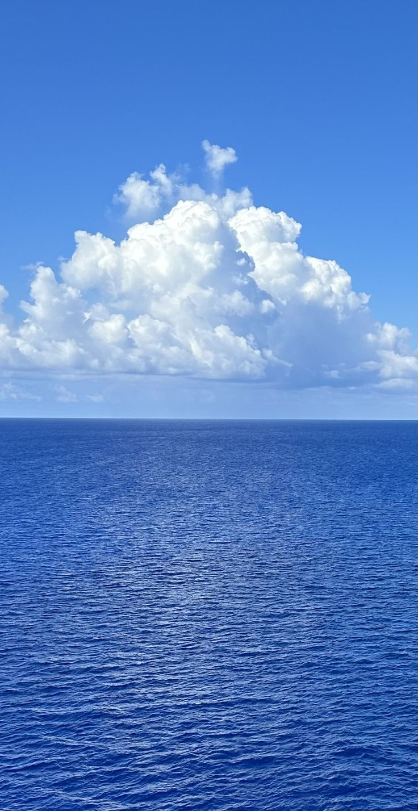

Présentation
Ava, est une créative dans l'âme, passionnée par l'art et l'esthétique.
Enfance d'Ava Rosset

Ava Rosset est née à Cagnes-sur-mer, en 2003.
Formations
Après une année en droit, elle rejoint la licence Information et Communication, parcours Organisation et stratégie numérique.
Expériences Professionnelles
Elle a effectué son stage de licence au sein d'une agence événementielle, où elle a acquis des compétences pratiques dans la gestion et l'organisation d'événements.
Projets Futurs
Elle aimerait rejoindre un Master orienté vers la culture.